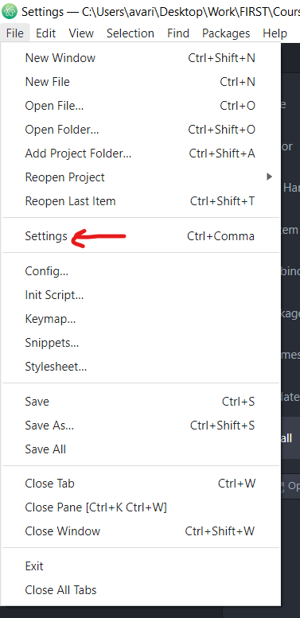
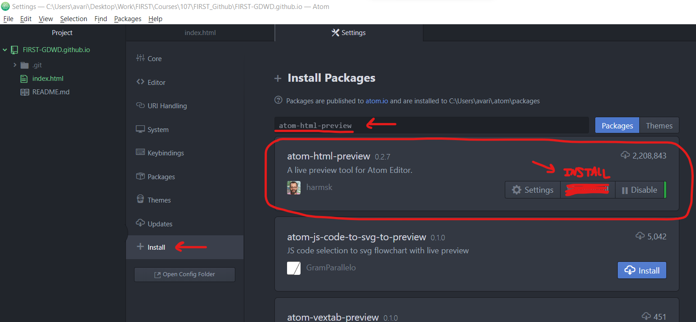
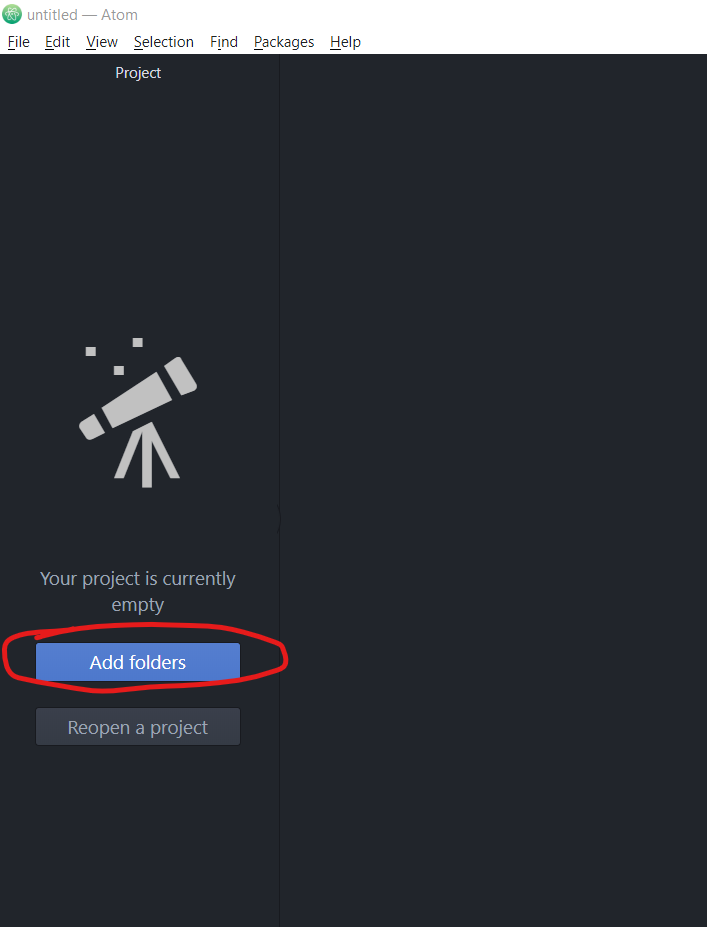
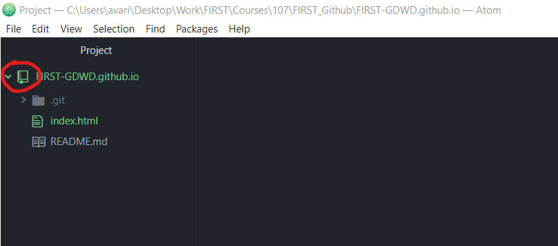
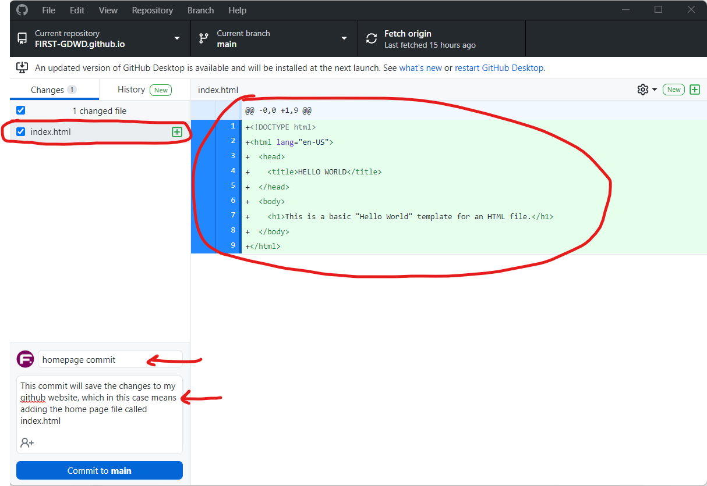
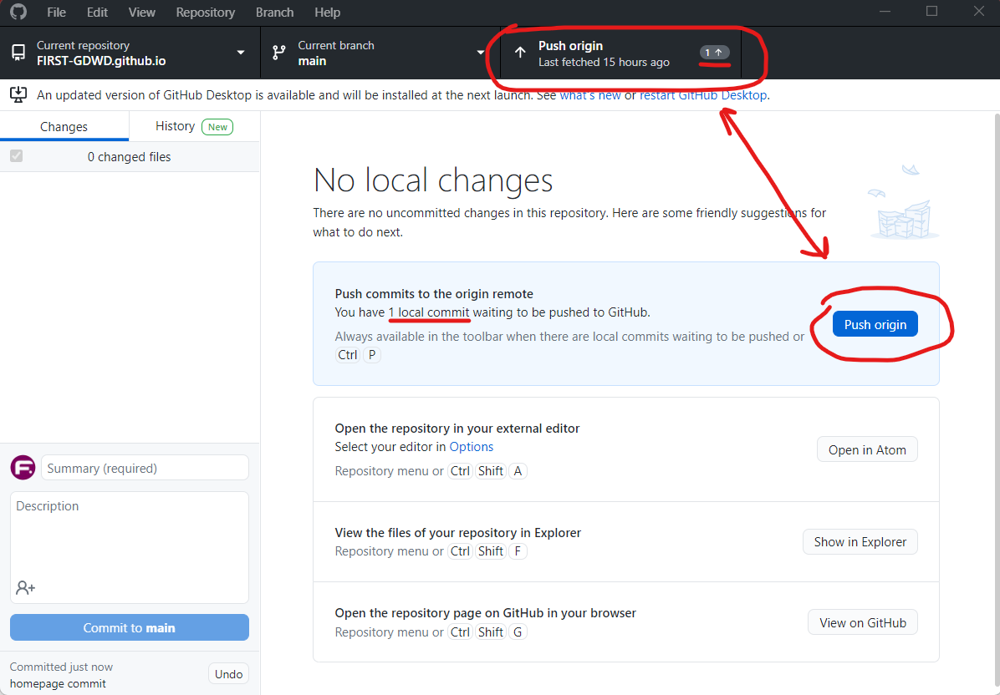
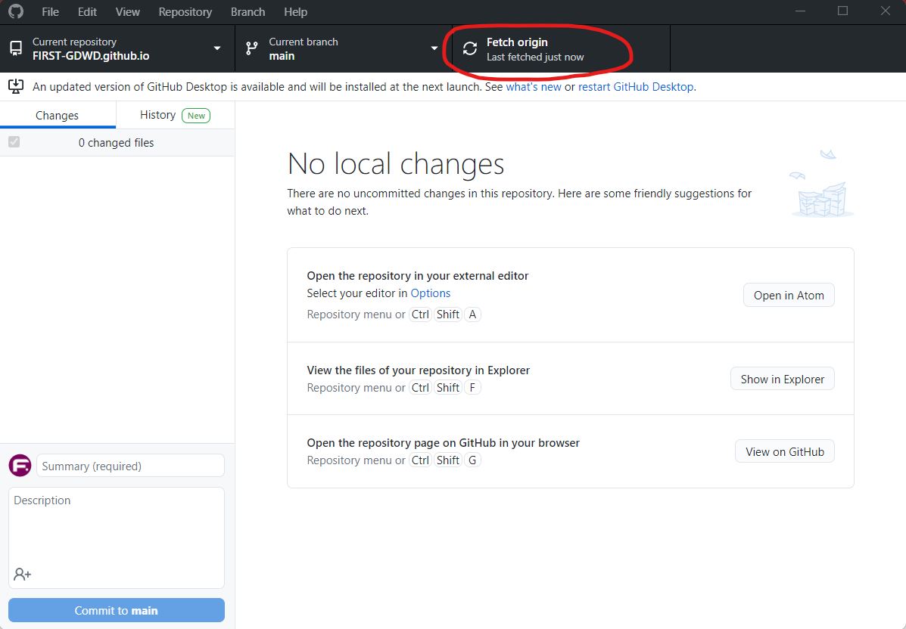
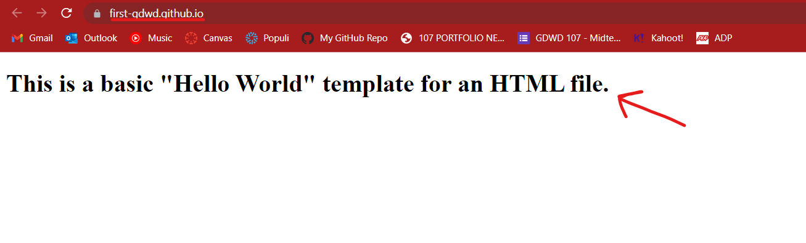

Pushing a home page up to Github
- If you haven't already, download and install the Atom text editor (found here: https://atom.io/ ).
- Install HTMLPreview by Harmsk in the packages tab (see the screenshots below for how to do that)
First, go to Settings in Atom. This will open a Settings tab.

In the Settings tab, click the Install link in the sidenav. Then in the search box, type "atom-html-preview". The package by "harmsk" should be the first result in the list; click the Install button to install the package in Atom.

This package will allow you to preview your HTML/CSS/Javascript code within Atom.
- In the left sidenav, click the "Add folders" button, and select the repository folder we just cloned earlier.

- If you added the correct folder, you should see a little book icon next to the repository name.

- Right-click on the repository in the sidenav, and create a new file called "index.html".
NOTE: index has a special meaning in most web servers; if you access a folder without specifying a file, the index page will get loaded. What this means for you, is that when you visit your web site URL, index.html will become the home page.
- Copy the code from this file, and paste it into your new index.html file. We're going to create a basic "Hello World!" home page for now.
Make sure to save your changes before moving on to the next step; if you have a little blue circle next to the file name, that means it has unsaved changes in it.
- Now, jump back to Github Desktop. In the app, you should see the new index.html file you added, along with its contents.

We're going to save a copy of your changes in something called a "commit". A commit is basically a snapshot of the changes you made, which gets added to the repository's source control. This is useful for many reasons; for example, if you make a breaking change to your website, you can revert back to a previous commit (aka snapshot) to make it work again while you try to figure out what went wrong.
Add a commit name (required) and description (optional) in the textboxes in the bottom left of the app. Then click the "Commit to main" button to create a commit of your changes.
WARNING: Github cannot handle super large files, and adding files greater than 20 MB could cause Github Desktop to choke; it is highly recommended to use compressed files on the web anyway, so if you have high resolution image or video files you'd like to use, talk with your instructor first. You will likely make your school life a lot harder otherwise...
- Next, we are going to do something called a "push". A push is an action that, well, pushes your local commits to the remote server on github.com.
There are two places you start a push in Github Desktop, both circled in the screenshot below. (The term origin refers to the repository on the remote server (github.com) that you cloned your local repository from.)
Note that each location has an indicator of how many commits you are going to push. That is because it's possible to make multiple commits locally before pushing them.

Go ahead and click either option to push your changes to your website.
- If the push was successful, the top option should change to "Fetch origin".

For reference:
Fetching is a command to tell Github Desktop to communicate with the remote server repository to see if anything changed since the last time we fetched.
If there were any changes (which could happen if you were writing code on multiple computers or with a team of developers who were pushing their own commits), that button would change to "Pull origin", and indicate how many commits that you're missing.
Pulling is the process of downloading/syncing changes from the remote server repository with your own local repository.
- Now go back to the GitHub website, and open up that link from earlier for your brand new website. With a couple minutes of pushing your code, the website should update to display your brand new "Hello World" home page.

- Congratulations! You just built your first GitHub Pages site.